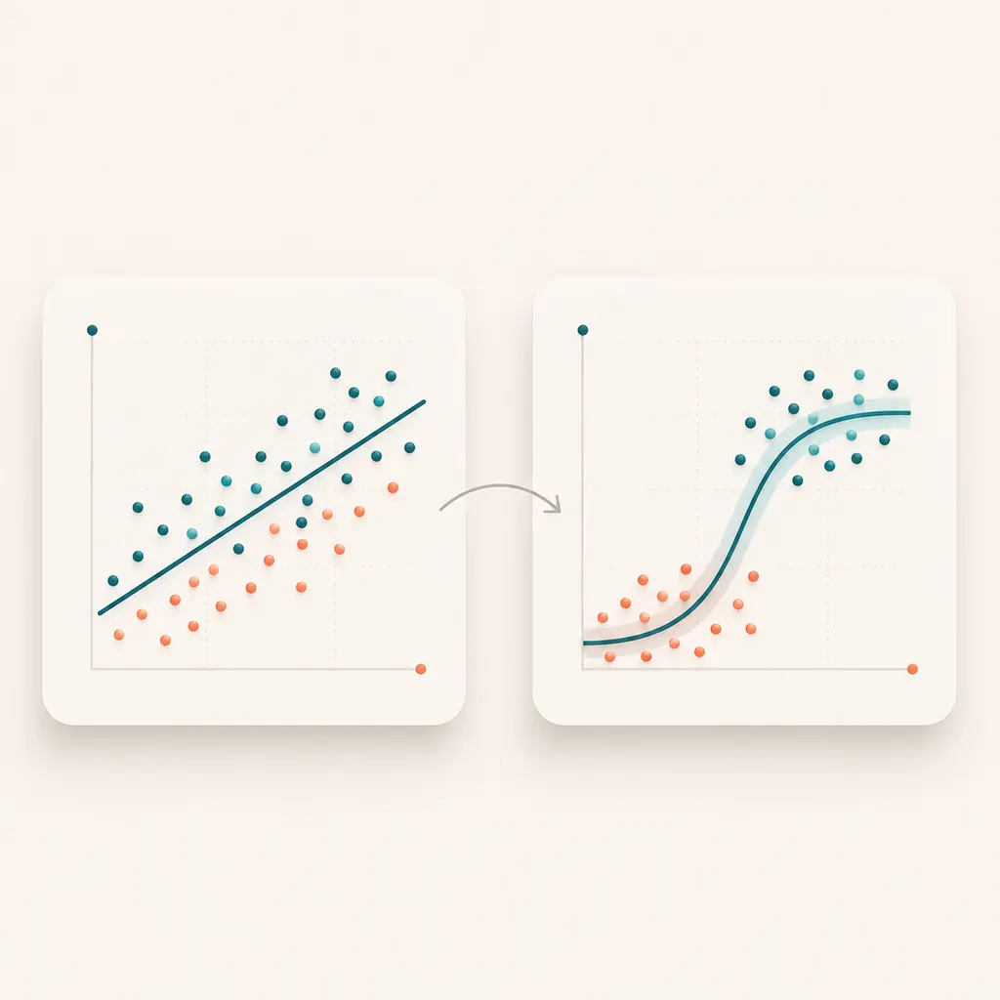

Recurso integrado · Unidad 7
Lectura interna del aula para trabajar regresion lineal, regresion logistica, OR, R2 y limitaciones. Este material reemplaza el documento externo embebido: se lee directamente dentro de la secuencia del curso.

Ajustar modelos simples con datos de salud y comunicar resultados sin convertir una asociacion estadistica en una conclusion causal exagerada.
| Archivo | Uso dentro de la unidad |
|---|---|
data/datasets/salud_muestra.csv |
Base liviana para ejecutar ejemplos en el laboratorio WebR. |
data/quizzes/quiz_u7.json |
Cuestionario de autoevaluacion de la Unidad 7. |
unidades/unidad7/material.html |
Este recurso integrado, embebible dentro del aula. |
salud <- read.csv("/data/salud_muestra.csv")
modelo_lineal <- lm(glucosa_mg_dl ~ imc + edad, data = salud)
summary(modelo_lineal)salud$diabetes_probable <- salud$diagnostico == "Diabetes probable"
modelo_log <- glm(diabetes_probable ~ edad + imc + tabaquismo,
data = salud, family = binomial)
exp(coef(modelo_log))exp(coef) devuelve odds ratios. Un OR no es
una probabilidad; compara odds entre niveles o por unidad de cambio.
confint(modelo_log)
AIC(modelo_log)Ejemplo: "En este conjunto de practica, mayor IMC se asocio con mayor glucosa promedio, ajustando por edad. El resultado es exploratorio y no permite concluir causalidad".